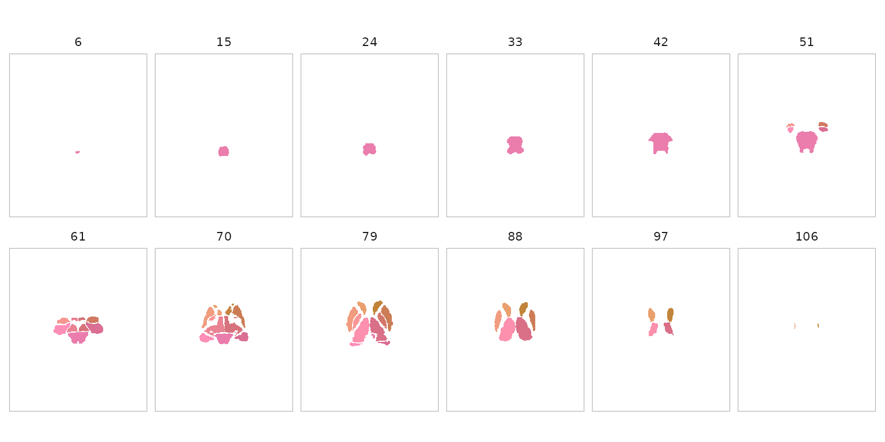
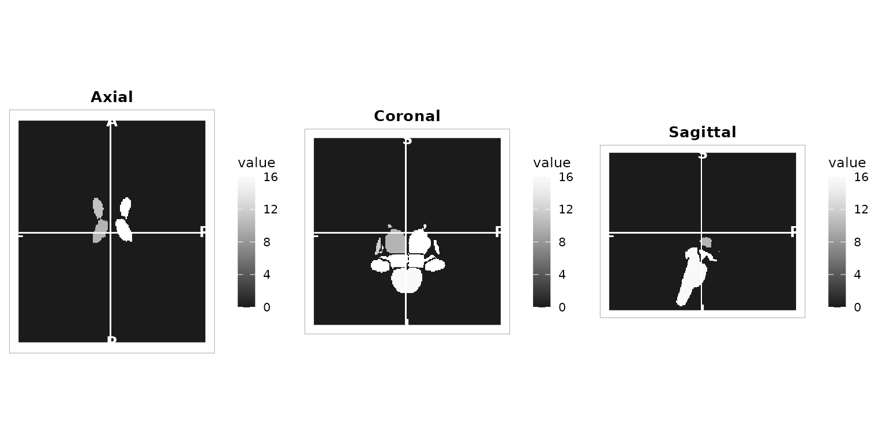
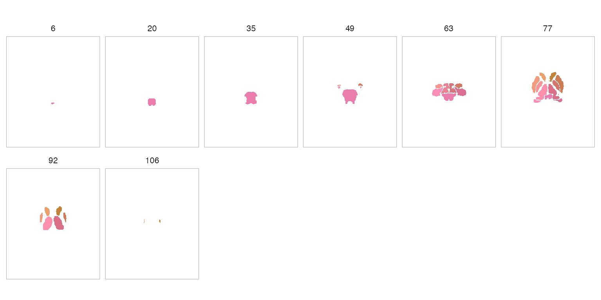
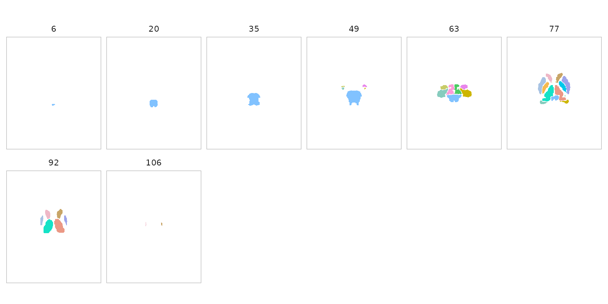
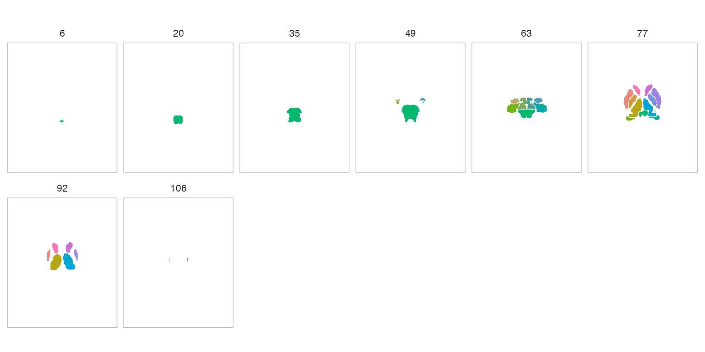
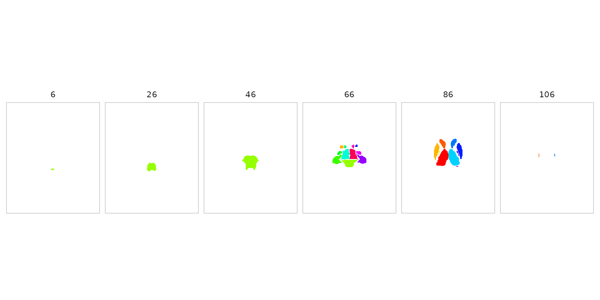
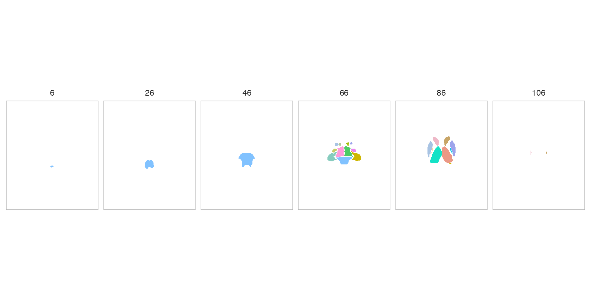
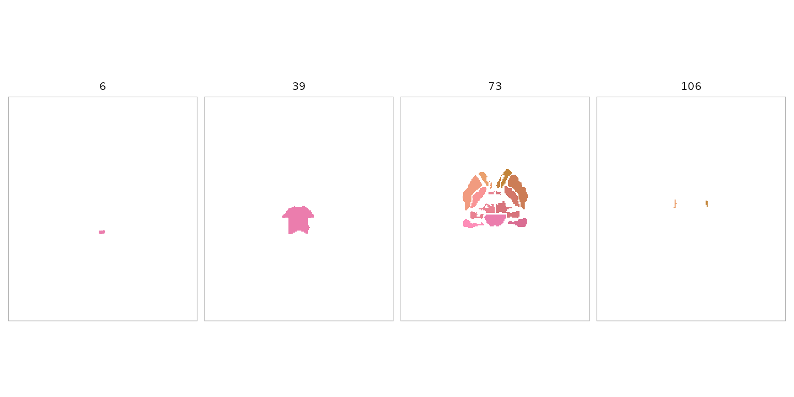

Atlas Visualization with Optimal Colours
Source:vignettes/atlas-visualization.Rmd
atlas-visualization.RmdIntroduction
Every atlas in neuroatlas can be visualised with a single call to
plot(). Behind the scenes, plot.atlas()
renders coloured parcels as volumetric slices using
neuroim2’s plot_montage() and
plot_ortho(), with colours assigned automatically by the
roi_colors system.
Quick Start
atlas <- get_aseg_atlas()
plot(atlas)
The default view is a multi-slice montage (axial
slices) with colours chosen by the rule_hcl algorithm — a
fast, deterministic palette that uses network hues and hemisphere
luminance differences.
For a three-plane orthogonal view:
plot(atlas, view = "ortho")
Colour Algorithms
neuroatlas ships four colour algorithms, each suited to different use
cases. Pass the method argument to plot() to
switch between them.
rule_hcl (default)
Deterministic and fast. Assigns hues per network with anterior-posterior gradients and hemisphere luminance offsets.
plot(atlas, method = "rule_hcl", nslices = 8)
maximin_view
Optimises perceptual separation between spatially neighbouring ROIs across slice views. Best for publication figures where adjacent parcels must be easily distinguished.
plot(atlas, method = "maximin_view", nslices = 8)
network_harmony
Network-aware: ROIs in the same network share analogous hue families
while still maximising local separation. Requires the atlas to have a
$network field (e.g. Schaefer atlases).
# Requires a Schaefer atlas with network metadata (network download)
schaefer <- get_schaefer_atlas(parcels = "200", networks = "7")
plot(schaefer, method = "network_harmony", nslices = 8)embedding
Projects ROI features to 2D (PCA or UMAP) and maps polar angle to hue, yielding globally structured gradients.
plot(atlas, method = "embedding", nslices = 8)
Custom Colours
You can supply your own colours as a named character vector (names
are region IDs) or as a tibble from atlas_roi_colors().
Named vector
my_cols <- setNames(rainbow(length(atlas$ids)), atlas$ids)
plot(atlas, colors = my_cols, nslices = 6)
Pre-computed tibble
color_tbl <- atlas_roi_colors(atlas, method = "maximin_view")
head(color_tbl)
#> # A tibble: 6 × 2
#> id color
#> <dbl> <chr>
#> 1 10 #14E2C6
#> 2 11 #EEB8C7
#> 3 12 #A8C3E3
#> 4 13 #F6BA4F
#> 5 16 #81C2FF
#> 6 17 #87CCBE
plot(atlas, colors = color_tbl, nslices = 6)
Programmatic Colour Access
The atlas_roi_colors() function is the bridge between
atlas objects and the roi_colors_*() family. It extracts
ROI centroids, builds a metadata tibble, and dispatches to the requested
algorithm.
cols <- atlas_roi_colors(atlas, method = "rule_hcl")
cols
#> # A tibble: 17 × 2
#> id color
#> <dbl> <chr>
#> 1 10 #FC90AD
#> 2 11 #EAA06D
#> 3 12 #F19B7F
#> 4 13 #F99596
#> 5 16 #EB7DAD
#> 6 17 #FD8EB8
#> 7 18 #F79690
#> 8 26 #ED9E73
#> 9 28 #E98292
#> 10 49 #D97088
#> 11 50 #C28439
#> 12 51 #CC7D56
#> 13 52 #D3776A
#> 14 53 #DA6E93
#> 15 54 #D17963
#> 16 58 #C58241
#> 17 60 #D7737CThis tibble can be joined with other atlas metadata for downstream analyses.
Controlling Slice Count
Use nslices to control how many slices appear in the
montage:
plot(atlas, nslices = 4)
Existing Visualisation Tools
For flatmap-style cortical visualisations (not volumetric), neuroatlas also provides:
-
ggseg_schaefer()— ggseg-based Schaefer flatmaps -
plot_glasser()— Glasser atlas flatmaps
These are complementary to plot() and remain available
as standalone functions.